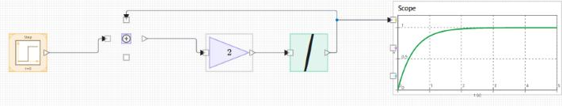
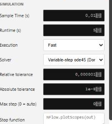

Tutorial: build a first-order system with feedback, then select a solver.
This second tutorial builds a continuous system and shows how the solver changes the way it is integrated. The model is a first-order lag: a step input drives a state that approaches the input with time constant tau. The equation is dx/dt = (u - x) / tau, which you build with a Sum, a Gain, and an Integrator wired in a feedback loop. It assumes you have done nflow_tutorial_first_model.
Place the blocks
Set the block parameters
Select the Sum block and set its signs to one plus and one minus, so it computes the input minus the fed-back state. Select the Gain block and set Gain to 1 / tau; for tau = 0.5 s, set it to 2. Leave the Integrator at an initial condition of 0.
Connect the blocks
The wire from the Integrator back to the Sum is the feedback path. It is what makes the state settle instead of growing without bound.

Run with the default engine
Set Runtime (s) to about 5 in the Model tab and press Run. With no solver selected, nflow uses the fixed-step discrete engine, and each continuous block integrates with a per-block Euler step at the model Sample Time (s). The Scope shows the state rising toward the step value along an exponential curve.
Choose a solver
Open the Model tab and set the Solver. The default (discrete) keeps the fixed-step engine. Select ode4 for a fixed-step fourth-order Runge-Kutta integration, which is more accurate than Euler at the same step. Select ode45 for an adaptive step controlled by the tolerances. When an adaptive solver is selected, set Relative tolerance and Absolute tolerance, and an optional Max step (0 = auto) ceiling. Tighter tolerances give a more accurate trajectory at the cost of more sub-steps. See nflow_solvers for the full list and for how each solver maps to generated C and Rust code.

Compare the step size
Lower the Sample Time (s) and run again with the discrete engine to see the Euler result approach the ode4 result. This is the trade-off a solver manages for you: accuracy against the number of steps.
What to try next
Add a second Integrator and a feedback gain to make a second-order system such as a mass-spring-damper, then continue with nflow_tutorial_dashboard to drive the model with live controls while it runs.
open_system([modulepath('nflow_blocks', 'root'), '/examples/causal/Second_Order_Responses_Demo.nflow']);| Version | Description |
|---|---|
| 1.0.0 | initial version |